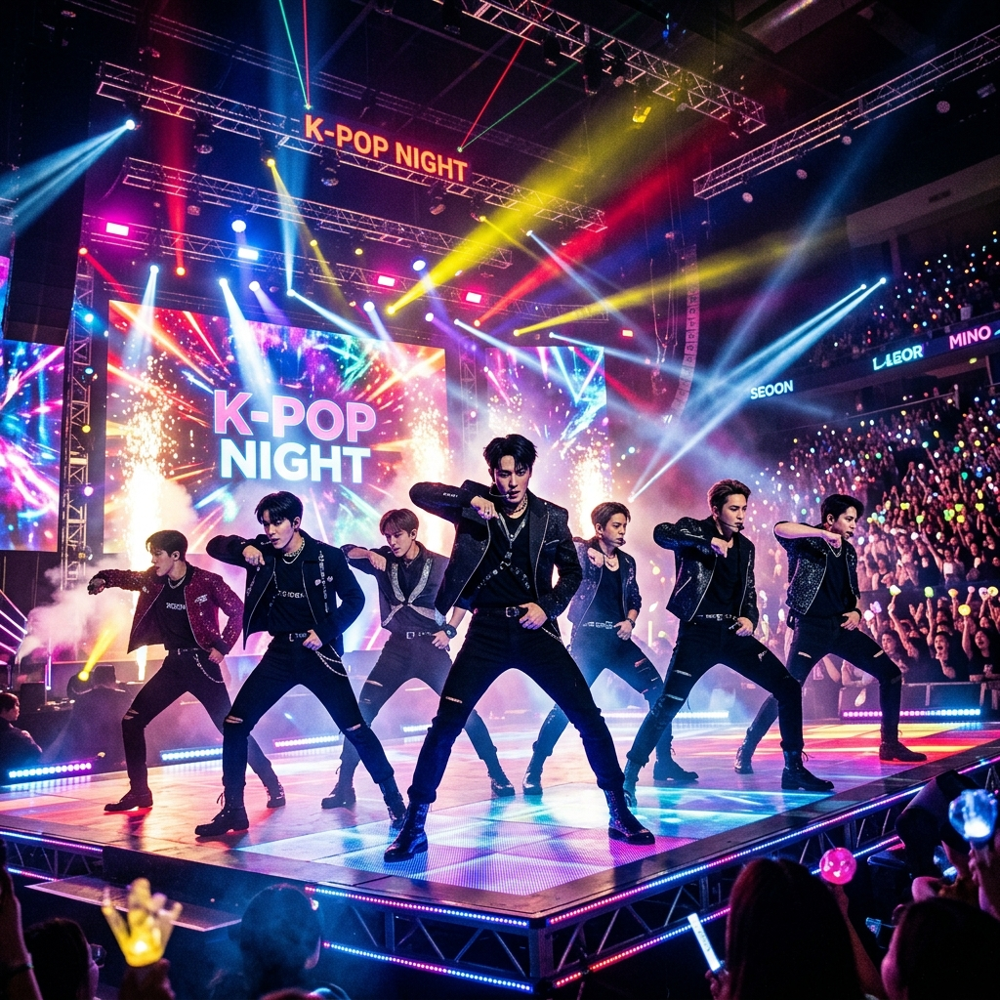

K-POP의 중심, 대한민국
K-POP의 중심, 대한민국
K-POP의
시작과 도약
1992년 '서태지와 아이들'의 등장은 한국 대중음악의 패러다임을 완전히 바꿨습니다. 이후 SM, JYP, YG 등 대형 기획사를 중심으로 한 '아이돌 시스템'이 구축되며 글로벌 시장 공략이 시작되었습니다.
1992
현대 K-POP의 원년
2026
글로벌 엔터의 기준

2026년 5월 최신 소식
컴백 소식
BTS, 'ARIRANG'으로 화려한 귀환
방탄소년단이 2026년 신보 'ARIRANG'과 타이틀곡 'Swim'을 통해 전 세계 차트 석권에 나섰습니다.
Wikipedia 2026
기록 경신
트와이스, 도쿄 국립경기장 정복
K-POP 아티스트 최초로 일본 도쿄 국립경기장에서 단독 3회 공연을 매진시키며 24만 명의 팬들과 호흡했습니다.
Headline News
5월 컴백대전
베이비몬스터 & 르세라핌 격돌
베이비몬스터의 'CHOOM', 르세라핌의 'PUREFLOW' 등 최정상급 걸그룹들의 신보가 5월 중 쏟아집니다.
Music Update
글로벌 영향력
#1
문화 파급력
100B+
총 스트리밍
50M+
글로벌 팬덤
24/7
글로벌 실시간 반응